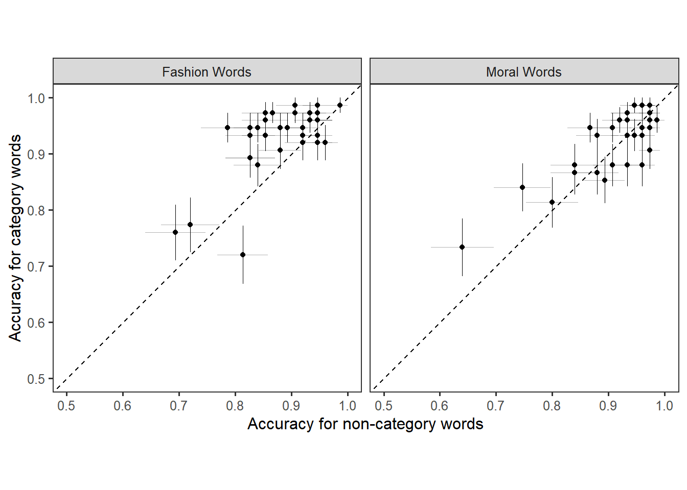
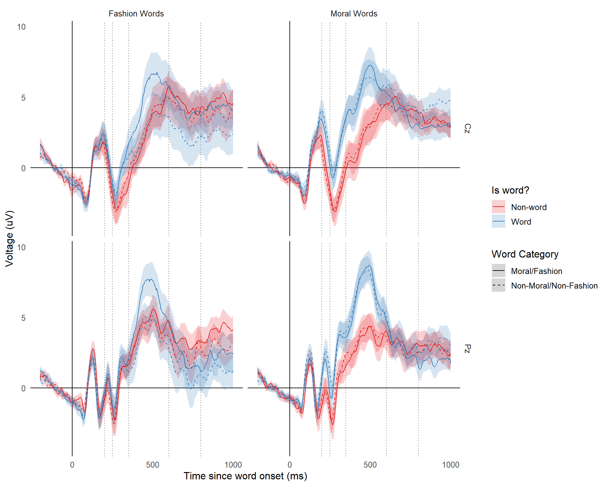
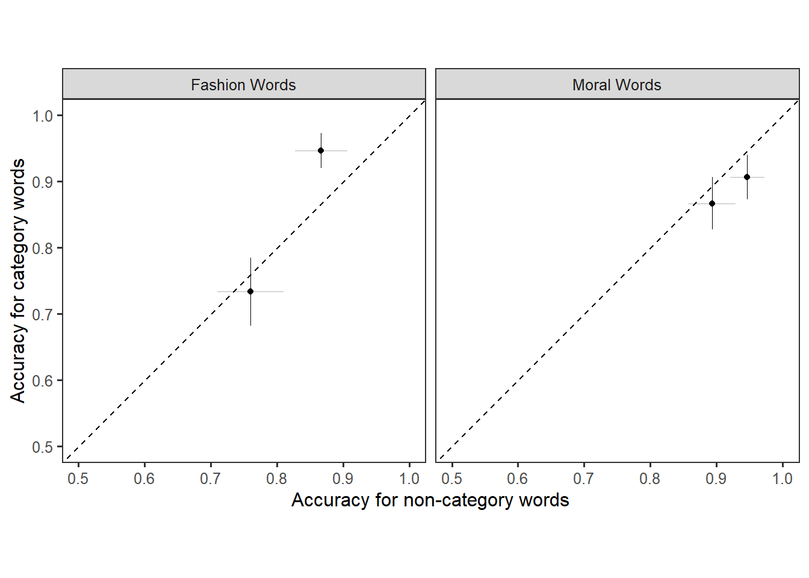
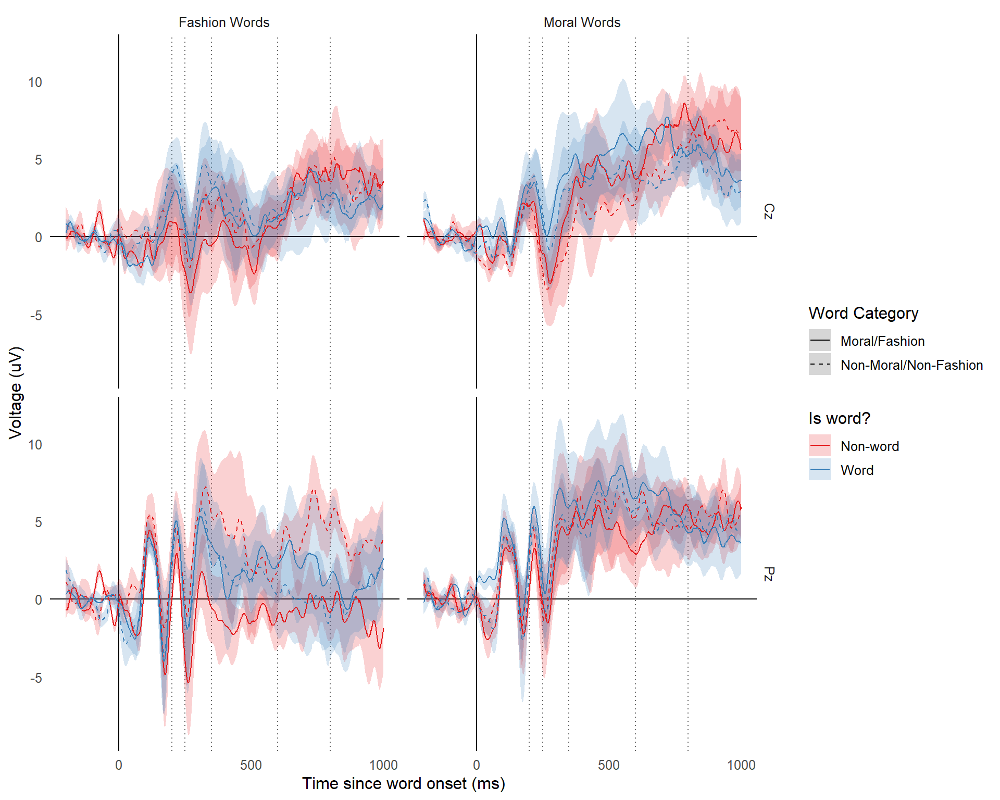

Replication of Gantman et al. 2024
Introduction
This is a replication of the study by Gantman et al. (2020). Replications are important for reasons.
Experiment 1
Methods
Participants
42 subjects participated in the study. After applying the exclusion criteria, 34 subjects remain. 7 subjects were excluded for receiving fashion words twice due to a technical error, 2 subjects were excluded for having poor EEG recordings, 0 subjects were excluded for having a non-response rate greater than 50%, and 0 subjects were excluded for having a non-word response rate greater than 90%.
Results
Behavioral
We found a pop-out effect fashion words, but not moral words.
In the moral condition, participants were 92.75% accurate for moral words and 91.65% accurate for non-moral words. This difference was not statistically significant in the GEE model, \(\beta\) = -0.153, SE = 0.093, z = -1.652, p = 0.09854433.
In the fashion condition, participants were 92.9% accurate for fashion words and 88.35% accurate for non-fashion words. This difference was statistically significant in the GEE model, \(\beta\) = -0.5454404, SE = 0.117, z = -4.674, p = 0.000002957336.
EEG

Words vs. Non-Words
Following Gantman et al. (2020), we looked for word vs. non-word ERP effects at each time window at electrode Pz.
In the moral condition, words elicited a more positive ERP in the P2 window (\(\beta\) = 2.136, SE = 0.365, z = 5.847, p = 0.000000005006606), N2 window (\(\beta\) = 2.302, SE = 0.449, z = 5.127, p = 0.0000002944552), and P3 window (\(\beta\) = 3.129, SE = 0.45, z = 6.95, p = 0.000000000003662404). There was no significant effect in the LPP window (\(\beta\) = 0.158, SE = 0.489, z = 0.324, p = 0.7460597).
In the fashion condition, there was no significant difference in any of the time windows; P2 window (\(\beta\) = 0.712, SE = 0.369, z = 1.933, p = 0.05325175), N2 window (\(\beta\) = 0.756, SE = 0.541, z = 1.398, p = 0.162149), P3 window (\(\beta\) = 1.019, SE = 0.679, z = 1.501, p = 0.1334695), and LPP window (\(\beta\) = -0.919, SE = 0.658, z = -1.397, p = 0.1625388).
Pop-out effects
Also following Gantman et al. (2020), we looked for ERP differences related to the category vs. non-category distinction in all four time windows at electrode Cz.
In the moral condition, there was a significant difference between moral and non-moral words in the P2 window (\(\beta\) = 0.791, SE = 0.355, z = 2.225, p = 0.02606441), but this difference was in the opposite direction predicted by Gantman et al. (2020). There were no significant differences between moral and non-moral words in the N2 window (\(\beta\) = 0.107, SE = 0.434, z = 0.246, p = 0.8057305), P3 window (\(\beta\) = -0.015, SE = 0.632, z = -0.023, p = 0.9812689), and the LPP window (\(\beta\) = 0.943, SE = 0.601, z = 1.57, p = 0.1164885).
In the fashion condition, there fashion words elicited a more positive ERP than non-fashion words in the P3 window (\(\beta\) = -2.244, SE = 0.64, z = -3.505, p = 0.0004573607) and LPP window (\(\beta\) = -1.941, SE = 0.928, z = -2.091, p = 0.03651921). There was no significant difference in the P2 window (\(\beta\) = 0.131, SE = 0.529, z = 0.248, p = 0.8044993) and N2 window (\(\beta\) = -0.161, SE = 0.548, z = -0.293, p = 0.7696241).
Experiment 2
Methods
Participants
59 subjects participated in the study. After applying the exclusion criteria, 55 subjects remain. 1 subject was excluded for receiving fashion words twice due to a technical error, 1 subject was excluded because they saw the first 100 trials twice due to an EEG data recording error, 2 subjects were excluded for having poor EEG recordings, 0 subjects were excluded for having a non-response rate greater than 50%, and 0 subjects were excluded for having a non-word response rate greater than 90%.
Results
Behavioral

In the moral condition, participants were 80.7% accurate for moral words and 79.93% accurate for non-moral words. This difference was not statistically significant in the GEE model, \(\beta\) = -0.049, SE = 0.052, z = -0.939, p = 0.3476172.
In the fashion condition, participants were 80.7% accurate for fashion words and 74.72% accurate for non-fashion words. This difference was statistically significant in the GEE model, \(\beta\) = -0.3473505, SE = 0.056, z = -6.174, p = 0.000000000666311.
EEG

Words vs. Non-Words
Following Gantman et al. (2020), we looked for word vs. non-word ERP effects at each time window at electrode Pz.
In the moral condition, words elicited a more positive ERP in the P2 window (\(\beta\) = 1.116, SE = 0.283, z = 3.948, p = 0.00007873479), N2 window (\(\beta\) = 1.41, SE = 0.361, z = 3.908, p = 0.00009311407), and P3 window (\(\beta\) = 2.313, SE = 0.402, z = 5.76, p = 0.000000008429841). There was no significant effect in the LPP window (\(\beta\) = 0.936, SE = 0.517, z = 1.81, p = 0.07021901).
In the fashion condition, there was no significant difference in any of the time windows; P2 window (\(\beta\) = 0.68, SE = 0.289, z = 2.356, p = 0.01847492), N2 window (\(\beta\) = 1.166, SE = 0.381, z = 3.058, p = 0.002226692), P3 window (\(\beta\) = 0.674, SE = 0.448, z = 1.505, p = 0.1323179), and LPP window (\(\beta\) = -0.267, SE = 0.497, z = -0.538, p = 0.5906444).
Pop-out effects
Also following Gantman et al. (2020), we looked for ERP differences related to the category vs. non-category distinction in all four time windows at electrode Cz.
In the moral condition, there was a significant difference between moral and non-moral words in the P2 window (\(\beta\) = 0.34, SE = 0.435, z = 0.782, p = 0.4342394), but this difference was in the opposite direction predicted by Gantman et al. (2020). There were no significant differences between moral and non-moral words in the N2 window (\(\beta\) = -0.106, SE = 0.603, z = -0.176, p = 0.8599203), P3 window (\(\beta\) = -0.45, SE = 0.527, z = -0.854, p = 0.3932194), and the LPP window (\(\beta\) = 0.241, SE = 0.549, z = 0.439, p = 0.6604908).
In the fashion condition, there fashion words elicited a more positive ERP than non-fashion words in the P3 window (\(\beta\) = -0.672, SE = 0.537, z = -1.25, p = 0.2112338) and LPP window (\(\beta\) = -0.717, SE = 0.509, z = -1.409, p = 0.158906). There was no significant difference in the P2 window (\(\beta\) = 0.382, SE = 0.373, z = 1.022, p = 0.3065854) and N2 window (\(\beta\) = -0.111, SE = 0.391, z = -0.284, p = 0.7766381).